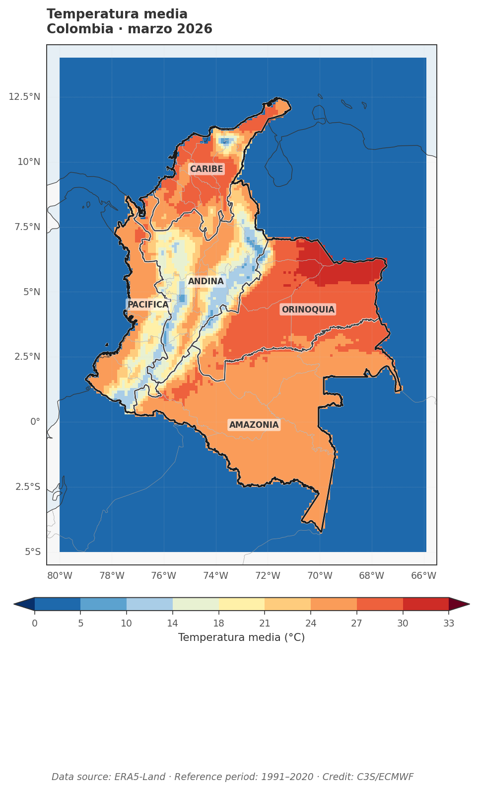
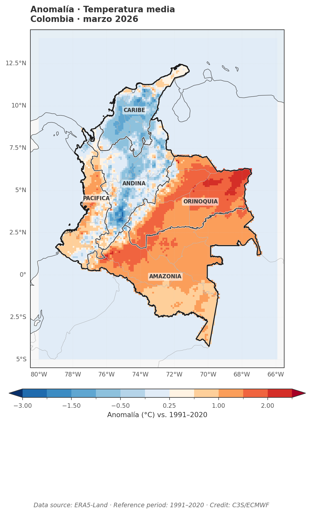
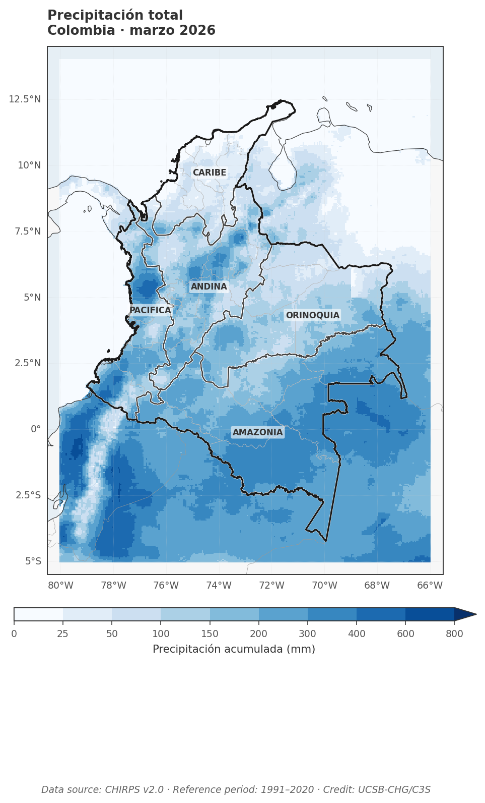
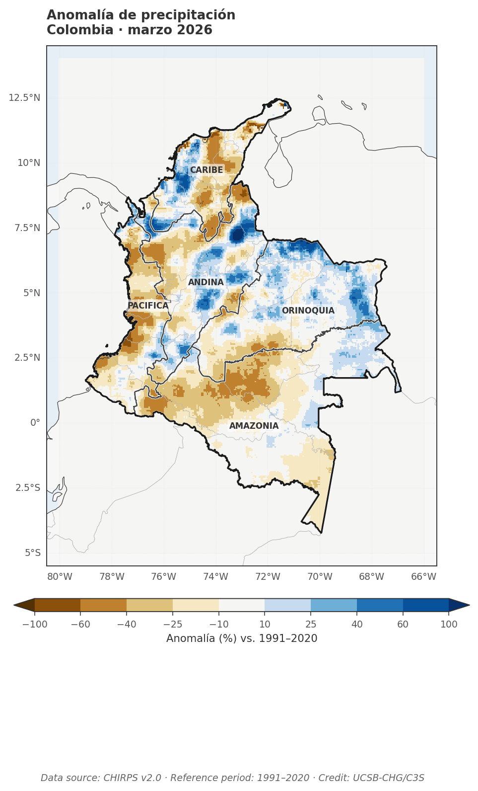

Temperatura del aire superficial
Data source: ERA5-Land · Reference period: 1991–2020 · Credit: C3S/ECMWFAnomalías de temperatura del aire superficial respecto al promedio del periodo 1991–2020. Valores positivos indican condiciones más cálidas de lo normal; valores negativos, más frías.


📊 Ranking histórico
Cargando...
Resumen regional
| Región | T media (°C) | Anomalía (°C) | % área >+1°C | % área <−1°C |
|---|---|---|---|---|
| Cargando datos... | ||||
Precipitación
Data source: CHIRPS v2.0 · Reference period: 1991–2020 · Credit: UCSB-CHGAnomalías de precipitación acumulada mensual respecto al promedio 1991–2020. Valores positivos indican condiciones más húmedas; negativos, más secas.


📊 Ranking histórico
Cargando...
Resumen regional
| Región | Precip. (mm) | Anomalía (%) | % área >+30% | % área <−30% |
|---|---|---|---|---|
| Cargando datos... | ||||
Notas metodológicas
Fuentes de datos
Temperatura: ERA5-Land daily aggregated (ECMWF), ~11 km de resolución. Precipitación: CHIRPS v2.0 (UCSB-CHG), ~5 km, combina satélite con estaciones. Acceso vía Google Earth Engine.
Periodo de referencia
Todas las anomalías se calculan respecto a la climatología mensual 1991–2020, siguiendo la convención de la WMO y de Copernicus C3S. Rankings y series históricas se extienden hasta el año actual.
Limitaciones
ERA5-Land suaviza gradientes altitudinales andinos (~11 km). CHIRPS puede subestimar eventos extremos en zonas con pocas estaciones. Las regiones naturales se aproximan agrupando departamentos completos.